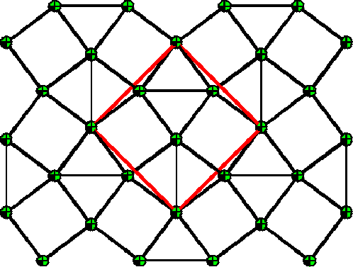
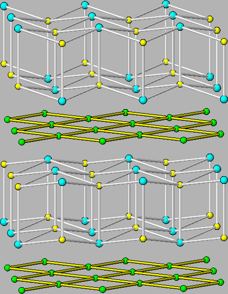

|
 |
The new binary antimonide Ti2Sb was discovered in Prof. Kleinke group [174] during attempts to further verify the usefulness of the recently published Kleinke-Harbrecht structure map of the M2Q pnictides and chalcogenides [175]. This structure map was previously utilized to correctly predict the hitherto uncovered arsenides ZrTiAs and ZrVAs that exhibit undistorted Ti and V square nets, respectively [176,177]. The Ti2Sb sample synthesis procedures is described elsewhere [174].
The crystal structure has been solved through conventional crystallographic analysis with both X-ray powder diffraction and single crystal diffraction refinements. Starting with a tetragonal unit cell (space group I4/mm, a = b = 3.95 Å, c = 14.61 Å, asymmetric unit: Ti1 (0.0, 0.0, 0.33), Ti2 (0.0, 0.5, 0.0), and Sb (0.0, 0.0, 0.14)), both diffraction data were fitted reasonably well. Fig. 5.1 shows the ball and stick model of Ti2Sb crystal structure.
|
 |
This simple distorted model with split Ti2 sites needs to be carefully examined. First, the introduced split Ti2 sites resulted in a unphysical Ti2-Ti2 bond length of 0.56 Å. This can be resolved if the two split sites originating from the same Ti2 site can not be occupied at the same time, though both with 50% occupancy. One hypothetical superstructure of the Ti2 net (shown in Fig. 5.3) was proposed, but can not be fully justified without the observation of super-lattice reflections. While the Ti2 square net distortion is nevertheless strongly suggested, the Ti2Sb structure appears to be a case of local distortions without long range ordering. If the Ti2 splitted sites scenario correctly describes the local structure, some specific set of local inter-atomic distance splits/changes is expected as shown in table 5.1. To establish beyond doubt about the local structure, a high resolution local structure probe is necessary. We employed the RA-PDF method to verify the local inter-atomic distances coming from the distorted model.